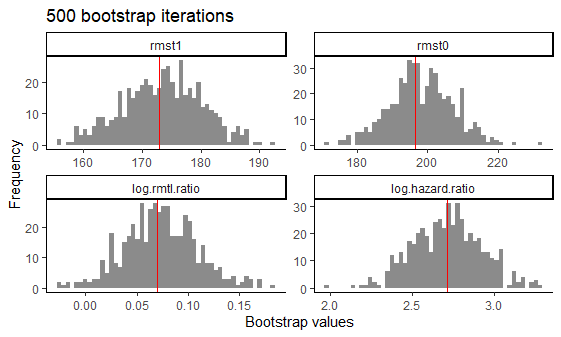
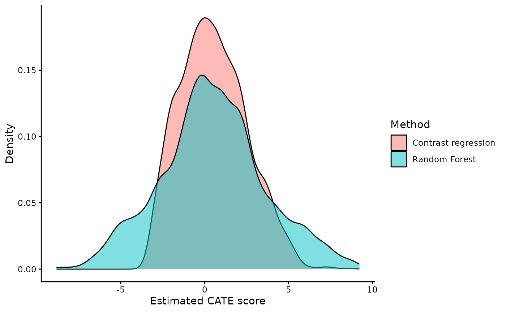
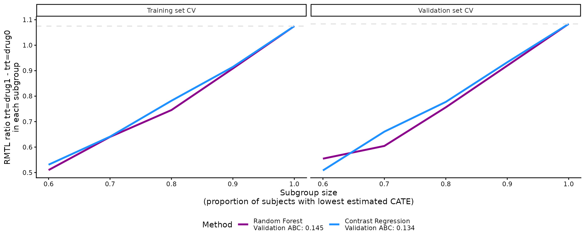
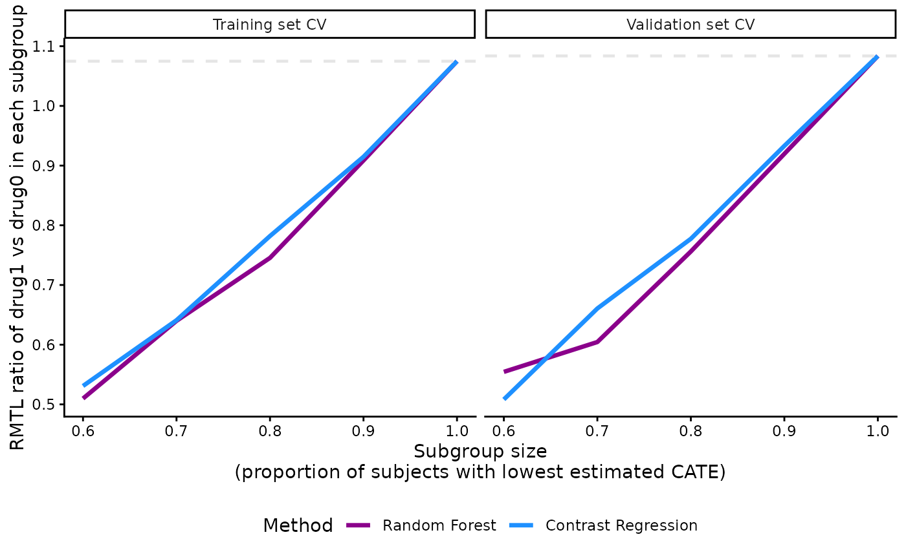
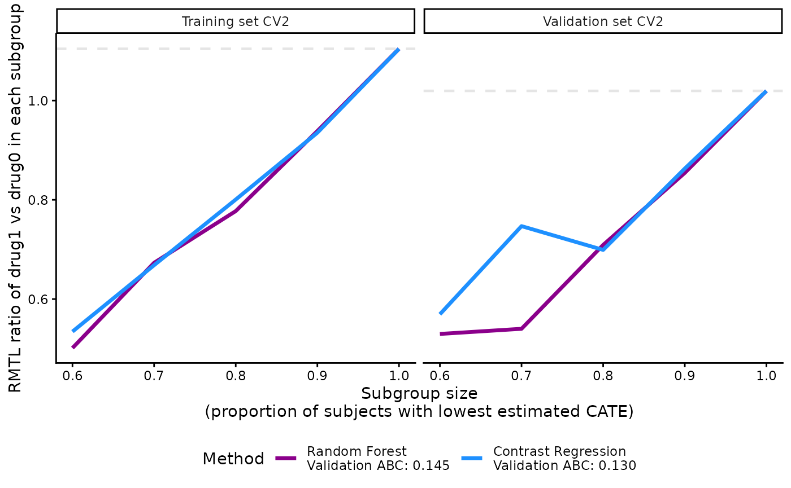
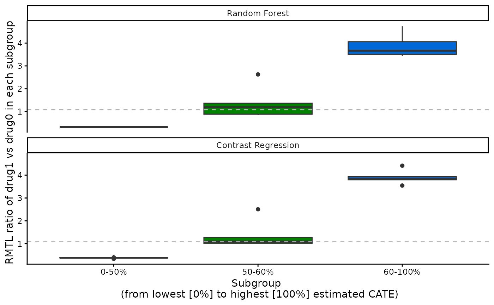

Estimating and validating treatment effects for survival outcomes
Vignette 2 of 4
November 14, 2026
Source:vignettes/Survival-examples.Rmd
Survival-examples.Rmd
This vignette demonstrates how to use precmed to
estimate average and conditional average treatment effects (ATEs and
CATEs) for survival outcomes. Using simulated multiple sclerosis data,
we model restricted mean time lost, compare CATE scoring methods through
internal validation, and interpret treatment effects in responder
subgroups.
Example data
To show the functionalities of the precmed package for
survival outcomes we first need data. For our examples we use simulated
data that is located in the survivalExample data set. The
data set survivalExample was simulated based on real-world
claims data in multiple sclerosis and has 4,000 observations and 9
variables.
| level |
Overall (n = 4000) |
drug0 (n = 1849) |
drug1 (n = 2151) |
|
|---|---|---|---|---|
| Age (mean (SD)) | 45.8 (9.9) | 37.3 (6.4) | 53.1 (5.5) | |
| Gender (%) | male | 996 (24.9) | 456 (24.7) | 540 (25.1) |
| female | 3004 (75.1) | 1393 (75.3) | 1611 (74.9) | |
| Previous treatment (%) | drugA | 1752 (43.8) | 819 (44.3) | 933 (43.4) |
| drugB | 459 (11.5) | 207 (11.2) | 252 (11.7) | |
| drugC | 1789 (44.7) | 823 (44.5) | 966 (44.9) | |
| Previous medical cost ($) (mean (SD)) | 14362.0 (24265.9) | 11358.0 (14393.2) | 16944.1 (30045.6) | |
| Previous number of symptoms (%) | 0 | 347 ( 8.7) | 191 (10.3) | 156 ( 7.3) |
| 1 | 2686 (67.2) | 1219 (65.9) | 1467 (68.2) | |
| >=2 | 967 (24.2) | 439 (23.7) | 528 (24.5) | |
| Previous number of relapses (%) | 0 | 2612 (65.3) | 1247 (67.4) | 1365 (63.5) |
| 1 | 1106 (27.7) | 488 (26.4) | 618 (28.7) | |
| 2 | 246 ( 6.2) | 99 ( 5.4) | 147 ( 6.8) | |
| 3 | 33 ( 0.8) | 14 ( 0.8) | 19 ( 0.9) | |
| 4 | 2 ( 0.0) | 1 ( 0.1) | 1 ( 0.0) | |
| 5 | 1 ( 0.0) | 0 ( 0.0) | 1 ( 0.0) | |
| Days until the first relapse (mean(SD)) | 141.6 (262.2) | 152.6 (275.5) | 132.1 (249.9) | |
| Event indicator (0: censoring, 1: relapse) (%) | 0 | 3352 (83.8) | 1695 (91.7) | 1657 (77.0) |
| 1 | 648 (16.2) | 154 ( 8.3) | 494 (23.0) |
Most variables are baseline patient characteristics like age, gender, and previous treatment.
We will use
yas the survival outcome, which is the number of days until the first relapse or censoring, whichever comes first.We will use
das the event indicator, where represents an event and represents censoring. The censoring rate is about 84%.We will use
trtas the treatment variable, which has 2 drugs (drug0 and drug1).
To avoid multicollinearity issues, the continuous variable
age was centered at 48 years old and the medical costs in
the year prior to treatment initiation previous_cost was
centered at 14,362 USD and scaled with standard deviation 24,266
USD.
The first six records of the final dataset
survivalExample are shown below:
| age | female | previous_treatment | previous_cost | previous_number_symptoms | previous_number_relapses | trt | y | d |
|---|---|---|---|---|---|---|---|---|
| -26.83375 | 1 | drugC | -0.3411389 | 1 | 0 | drug0 | 102.05014 | 0 |
| -2.83375 | 1 | drugA | -0.2391696 | 1 | 1 | drug0 | 51.34050 | 0 |
| -12.83375 | 1 | drugC | -0.1710498 | 1 | 2 | drug0 | 104.92599 | 0 |
| -20.83375 | 0 | drugA | -0.3915099 | >=2 | 0 | drug0 | 61.49291 | 0 |
| 6.16625 | 0 | drugC | -0.5179329 | >=2 | 1 | drug1 | 35.60818 | 0 |
| -11.83375 | 1 | drugA | -0.4077500 | 1 | 0 | drug0 | 17.26454 | 0 |
Estimate the average treatment effect
Unadjusted treatment comparison
We first compare time to first relapse between treatment groups using a Cox model with treatment as the only predictor. This unadjusted, marginal association does not account for differences in patient characteristics.
library(survival)
output_cox <- coxph(Surv(y, d) ~ trt, data = survivalExample)
summary(output_cox)
#> Call:
#> coxph(formula = Surv(y, d) ~ trt, data = survivalExample)
#>
#> n= 4000, number of events= 648
#>
#> coef exp(coef) se(coef) z Pr(>|z|)
#> trtdrug1 1.11311 3.04381 0.09233 12.06 <2e-16 ***
#> ---
#> Signif. codes: 0 '***' 0.001 '**' 0.01 '*' 0.05 '.' 0.1 ' ' 1
#>
#> exp(coef) exp(-coef) lower .95 upper .95
#> trtdrug1 3.044 0.3285 2.54 3.648
#>
#> Concordance= 0.639 (se = 0.009 )
#> Likelihood ratio test= 170.1 on 1 df, p=<2e-16
#> Wald test = 145.3 on 1 df, p=<2e-16
#> Score (logrank) test = 160.9 on 1 df, p=<2e-16The estimated hazard ratio (HR) for drug 1 versus drug 0 is 3.04. It compares instantaneous relapse hazards among patients still event-free and does not by itself establish a causal treatment effect.
We can examine the proportional-hazards assumption using scaled Schoenfeld residuals. A roughly horizontal curve is consistent with a constant HR over time; the dashed curves show approximate 95% uncertainty bands.
ph_unadjusted <- cox.zph(output_cox, transform = "identity")
print(ph_unadjusted)
#> chisq df p
#> trt 15.3 1 8.9e-05
#> GLOBAL 15.3 1 8.9e-05
plot(ph_unadjusted, var = "trt", hr = TRUE, resid = FALSE,
xlab = "Days since treatment initiation",
ylab = "Unadjusted hazard ratio: drug1 vs drug0")
abline(h = exp(coef(output_cox)[1]), lty = 3, col = "steelblue")The dotted line is the constant HR from the Cox model. The smooth curve suggests how the treatment association may vary over time; it is a diagnostic rather than a precise estimate at every time point. The treatment test p-value is 8.9^{-5}; later follow-up may be less informative when fewer patients remain at risk.
Covariate-adjusted treatment comparison
Next, we adjust for age, sex, previous medical cost and previous relapses. We first choose an illustrative horizon: the smaller 95th percentile of observed follow-up in the two treatment groups.
tau0 <- with(survivalExample,
min(quantile(y[trt == "drug1"], 0.95), quantile(y[trt == "drug0"], 0.95)))
tau0
#> [1] 522.6618The horizon is approximately 522.7 days. It defines the period over which we will compare restricted mean outcomes. This choice uses observed times, including censoring, and does not guarantee sufficient follow-up; inspect numbers at risk and censoring near the horizon in both groups and choose a clinically meaningful horizon with adequate support.
For comparison with the adjusted HR later returned by
atefit(), we censor follow-up at tau0 and fit
the same covariate-adjusted Cox model:
cox_data <- survivalExample
cox_data$time_tau <- pmin(cox_data$y, tau0)
cox_data$event_tau <- cox_data$d * (cox_data$y <= tau0)
output_cox_adjusted <- coxph(
Surv(time_tau, event_tau) ~ trt + age + female + previous_cost + previous_number_relapses,
data = cox_data
)
summary(output_cox_adjusted)
#> Call:
#> coxph(formula = Surv(time_tau, event_tau) ~ trt + age + female +
#> previous_cost + previous_number_relapses, data = cox_data)
#>
#> n= 4000, number of events= 617
#>
#> coef exp(coef) se(coef) z Pr(>|z|)
#> trtdrug1 3.397427 29.887108 0.182864 18.579 < 2e-16 ***
#> age -0.113755 0.892477 0.007606 -14.957 < 2e-16 ***
#> female -0.006535 0.993486 0.094564 -0.069 0.944902
#> previous_cost 0.078669 1.081846 0.022126 3.556 0.000377 ***
#> previous_number_relapses -1.008998 0.364584 0.087938 -11.474 < 2e-16 ***
#> ---
#> Signif. codes: 0 '***' 0.001 '**' 0.01 '*' 0.05 '.' 0.1 ' ' 1
#>
#> exp(coef) exp(-coef) lower .95 upper .95
#> trtdrug1 29.8871 0.03346 20.8848 42.7698
#> age 0.8925 1.12048 0.8793 0.9059
#> female 0.9935 1.00656 0.8254 1.1958
#> previous_cost 1.0818 0.92435 1.0359 1.1298
#> previous_number_relapses 0.3646 2.74285 0.3069 0.4332
#>
#> Concordance= 0.76 (se = 0.014 )
#> Likelihood ratio test= 571.5 on 5 df, p=<2e-16
#> Wald test = 466.1 on 5 df, p=<2e-16
#> Score (logrank) test = 516.5 on 5 df, p=<2e-16The adjusted HR is 29.89, compared with 3.04 in the unadjusted model. These models differ in both covariate adjustment and follow-up horizon. Age differs substantially between groups and has limited overlap, so the adjusted comparison relies heavily on the model. An adjusted HR is conditional on the included covariates and is not automatically a causal average treatment effect.
ph_adjusted <- cox.zph(output_cox_adjusted, transform = "identity")
print(ph_adjusted)
#> chisq df p
#> trt 0.0167 1 0.8972
#> age 0.6207 1 0.4308
#> female 0.0747 1 0.7846
#> previous_cost 7.4645 1 0.0063
#> previous_number_relapses 3.1394 1 0.0764
#> GLOBAL 15.3651 5 0.0089
plot(ph_adjusted, var = "trt", hr = TRUE, resid = FALSE,
xlab = "Days since treatment initiation",
ylab = "Adjusted hazard ratio: drug1 vs drug0")
abline(h = exp(coef(output_cox_adjusted)["trtdrug1"]), lty = 3, col = "steelblue")The adjusted treatment test p-value is 0.9 and the global test p-value is 0.0089. A large treatment p-value does not prove proportional hazards, and the global test also assesses the other covariates. The two plots use different models and follow-up periods, so differences between them cannot be attributed solely to adjustment.
Estimate the average treatment effect with
atefit()
An alternative summary is the restricted mean survival time (RMST),
the average event-free time up to tau0. Restricted mean
time lost (RMTL) is tau0 - RMST. The RMTL ratio compares
time lost under drug 1 with time lost under drug 0 over that horizon;
for relapse, a ratio below 1 favors drug 1. Unlike a single Cox HR, this
measure does not require the treatment HR to be constant over time.
Results depend on the chosen horizon. Chapter 20 discusses RMTL for
ratio-based treatment effects (Jiang et al.
2026).
The atefit() function estimates the population-level
RMTL ratio and also reports the adjusted Cox HR. The RMTL estimator is
doubly robust with respect to the propensity score (PS) and outcome
models: under the required assumptions, either model may be correctly
specified. It also depends on inverse probability of censoring weights
(IPCW) and a correctly specified censoring model. The function provides
standard errors, confidence intervals and p-values based on bootstrap.
If an out-of-range RMST estimate is replaced by an outcome-model
estimate, that fallback does not retain the doubly robust guarantee.
IPCW adjusts for censoring by weighting patients according to their estimated probability of remaining uncensored. Causal interpretation requires assumptions including no unmeasured treatment confounding, adequate treatment overlap, appropriate censoring assumptions and sufficient follow-up. Chapter 17 discusses identification of treatment effects in non-randomized data (Hoogland et al. 2026). The Cox hazard ratio and the RMTL ratio describe different aspects of survival and should be interpreted separately.
The mandatory arguments for atefit() are:
The
responseargument specifies the type of outcome in the data. For survival outcomes,response= “survival”. This informs the function of the necessary arguments and methods to use.The argument
dataindicates the data frame in which the outcome, treatment and covariates specified in eithercate.modelorps.modelshould be fetched.The argument
cate.modelspecifies the CATE model as a formula, with the survival object from thesurvivalpackage,Surv(y, d), supplied on the left-hand side and the explanatory covariates supplied on the right-hand side. In the example below, we chose to specify to CATE as a linear combination of the following covariates: age, sex, medical costs in the year prior to treatment initiation, and number of relapses in the year prior to treatment initiation. Non-linear or interaction terms could also be included. Note that the treatment variable is not supplied incate.modelsince this is an outcome model.The
ps.modelargument specifies the PS model as a formula, with the treatment variabletrton the left-hand side and the covariates (age and previous treatment in this example) on the right-hand side. The variabletrtmust be supplied as a numeric variable taking only 2 values, “1” for active treatment and “0” for control or comparator. If it is not the case,atefit()will stop with error iftrttakes more than 2 distinct values or will automatically transformtrtinto a numeric variable. In this example,trt(a factor variable taking values “drug0” and “drug1”) was transformed and a warning message was left to the user (see output below):Variable trt was recoded to 0/1 with drug0->0 and drug1->1. If the data are from a RCT, it suffices to specifyps.model= trt ~ 1. The PS model is used in the doubly robust RMTL estimation.tau0: The horizon for RMST and RMTL. We reuse the value calculated above.
Now estimate the ATE using an outcome model with age, sex, previous
cost and previous relapses, and a PS model with age and
previous_treatment.
output_atefit <- atefit(response = "survival",
data = survivalExample,
cate.model = survival::Surv(y, d) ~ age + female + previous_cost + previous_number_relapses,
ps.model = trt ~ age + previous_treatment,
tau0 = tau0)
#> Warning in data.preproc.surv(fun = "drinf", cate.model = cate.model, ps.model = ps.model, : Variable trt was recoded to 0/1 with drug0->0 and drug1->1.When verbose = 1, the function outputs a progress bar in
the console.
output_atefit
#> Average treatment effect:
#>
#> estimate SE CI.lower CI.upper pvalue
#> log.rmtl.ratio 0.0701553 0.03415434 0.003214028 0.1370966 0.0399692
#> log.hazard.ratio 3.3974272 0.27890929 2.850775065 3.9440794 0.0000000
#>
#> Estimated RMST:
#>
#> estimate SE CI.lower CI.upper pvalue
#> rmst1 172.8609 6.559210 160.0051 185.7167 0
#> rmst0 196.5603 8.793107 179.3261 213.7944 0
#> Warning in print.atefit(x): Variable trt was recoded to 0/1 with drug0->0 and drug1->1.The output of atefit() shows the point estimate,
standard error (“SE”), lower (“CI.lower”) and upper (“CI.upper”) bound
of the 95% confidence interval, and the p-value (“pvalue”) for 4
estimands:
the restricted mean survival time under drug 1 (
$rmst1)the restricted mean survival time under drug 0 (
$rmst0)the log RMTL ratio (
$log.rmtl.ratio), which is the log of the ratio oftau0-$rmst1divided bytau0-$rmst0the log HR (
$log.hazard.ratio).
The log HR comes from a Cox model adjusted for the variables in
cate.model, with follow-up censored at tau0.
Exponentiating it gives the adjusted HR: 29.89. This differs from the
unadjusted HR above. In these simulated data, age differs substantially
between treatment groups, and the groups have limited overlap in age;
consequently, the adjusted comparison relies heavily on the model. The
Cox HR is not the doubly robust RMTL estimate and should be interpreted
separately.
For example, the log RMTL ratio of 0.07 and the 95% confidence
interval of (0, 0.14) are displayed in the output. The estimated ratio
and its interval can be obtained by exponentiating these log-scale
values. A ratio above 1 indicates more time lost before
tau0 under drug 1; the interval describes uncertainty in
that comparison. The RMST estimates provide the corresponding event-free
times up to tau0.
The output of atefit() is expressed in terms of
treatment 0 vs 1, where the RMTL and hazard ratios are expressed as the
ratio of the treatment coded as 1 over the treatment coded as 0. If the
treatment variable is not coded as 0/1 in the data set, the function
returns a warning output_atefit$warning which indicates
what key was used to recode the treatment variable into a 0/1
variable.
output_atefit$warning
#> [1] "Variable trt was recoded to 0/1 with drug0->0 and drug1->1.\n"Using plot(output_atefit), a histograms is generated of
the point estimates across the n.boot bootstrap iterations
for 4 estimands (rmst1, rmst0,
log.rmtl.ratio, log.hazard.ratio). A red
vertical line is added to each histogram with the mean of the bootstrap
estimates.

Histograms of bootstrap estimators for 4 estimands after 500 bootstrap
Estimate CATE scores
Chapter 17 describes treatment effect heterogeneity and CATE prediction (Hoogland et al. 2026). In this example, scores are on the log-RMTL-ratio scale, so exponentiating a score gives an estimated conditional RMTL ratio. Lower scores indicate greater estimated benefit from drug 1. Fitting scores on the full dataset does not establish their performance in new patients.
Now we have calculated the ATE we know the effect of both treatments
on average, but this effect might not be the same for all patients.
Thus, it might be worthwhile to check if there are subgroups that
respond differently to the treatments. We can calculate the Conditional
Average Treatment Effect (CATE) score which calculates the ATE for
different subgroups in the data. If no internal validation is needed (we
get back to that later), we can use the catefit() function
to a model directly to the entire data set to estimate the CATE score.
For the catefit() function we have to define the
score.method. This arguments specifies the precision
medicine (PM) method to be used to calculate the CATE scores. There are
a total of 5 scoring methods implemented:
The mandatory arguments in catefit() are:
response: “survival” in this example because we use have data with a survival outcome (e.g., number of days until the first relapse or censoring))data: the name of the data set. (survivalExample)-
score.method: argument specifies the precision medicine (PM) methods to be used to calculate the CATE scores. There are a total of 5 scoring methods implemented:poissonfits a Poisson model separately by treatment group.boostinguses gradient boosted regression models (GBM) separately by treatment group.randomForestfits a random forest model by treatment group.twoRegimplements the doubly robust two regressions estimator in (Yadlowsky et al. 2021).contrastRegimplements the doubly robust contrast regression estimator from (Yadlowsky et al. 2021).
cate.model: A formula describing the outcome model to be fitted. The outcome must appear on the left-hand side. In the example, we choose to specify to outcome model as a linear combination of the following covariates: age, sex, medical costs in the year prior to treatment initiation, and number of relapses in the year prior to treatment initiation. Non-linear or interaction terms could also be included. Note that the treatment variable is not supplied incate.modelsince this is an outcome model.ps.model: A formula describing the propensity score (PS) model to be fitted. The treatment must appear on the left-hand side and the covariates (age and previous treatment in this example) on the right-hand side. The variabletrtmust be supplied as a numeric variable taking only 2 values, 1 for active treatment and 0 for control or comparator. If it is not the case, the function will stop with error iftrttakes more than 2 distinct values or will automatically transformtrtinto a numeric variable. In this example,trt(a factor variable taking values “drug0” and “drug1”) was transformed and a warning message was left to the user (see output below):Variable trt was recoded to 0/1 with drug0->0 and drug1->1. If the data are from a RCT, it suffices to specifyps.model= trt ~ 1. Note that the PS model is only used in the estimation of the 2 doubly robust methods (two and contrast regressions).
We also specified the following non-mandatory arguments to fit with
the data and problem at hand: initial.predictor.method,
tau0, higher.y, seed, and
plot.gbmperf.
initial.predictor.methodspecifies how predictions of the outcome are estimated in two regressions and contrast regression. Flexible models can be used such as GBM (“boosting”), random forests (“randomForest”) or logistic regression (“logistic”). We chose “logistic” because it is relatively faster than boosting methods and random forest.tau0is the horizon for RMTL, chosen as described above; assess follow-up support near this horizon in both treatment groups.higher.ywas set toTRUEbecause relapse is a negative event and longer time to first relapse is more desirable in our example. Hence, we are telling the function that subgroups of high responders to drug1 vs drug0 should have later onset of the first relapse. For a positive event such as discharge, a shorter time may instead be preferable, sohigher.y = FALSEmay be appropriate. It is important for this argument to match with the nature ofyoutcome because it will affect how the subgroups are defined by the CATE scores and the performance metrics.We set a random seed
seed= 999 to reproduce the results.We avoided generating the boosting performance plots by specifying
plot.gbmperf= FALSE.
Please see the Function description section for details.
If you run into errors or warnings with your data, it might be
helpful to go over the descriptions to see if you need to alter the
default values. In this toy example, we keep the default values of the
remaining arguments. For this toy example we selected
randomForest and contrastReg to limit run
time.
tau0 <- with(survivalExample,
min(quantile(y[trt == "drug1"], 0.95), quantile(y[trt == "drug0"], 0.95)))
output_catefit <- catefit(response = "survival",
data = survivalExample,
score.method = c( "randomForest", "contrastReg"),
cate.model = survival::Surv(y, d) ~ age + female + previous_cost + previous_number_relapses,
ps.model = trt ~ age + previous_treatment,
initial.predictor.method = "logistic",
tau0 = tau0,
higher.y = TRUE,
seed = 999,
plot.gbmperf = FALSE)
#> Warning in data.preproc.surv(fun = "catefit", cate.model = cate.model, ps.model = ps.model, : Variable trt was recoded to 0/1 with drug0->0 and drug1->1.Each method specified in score.method has the following
sets of results in catefit():
-
scorecontains the log-transformed estimated CATE scores for each subject. The relationship between covariates and the score depends on the scoring method. For survival outcomes, lower scores correspond to high responders to drug 1 whenhigher.y= TRUE; higher scores correspond to high responders whenhigher.y= FALSE. In our example, the survival outcome is time to first relapse, which is a negative event, so higher values indicate later onset of the first relapse. Hence, we specifyhigher.y= TRUE in the example. Each subject has 1 CATE score so the length of this output is 4,000 for our toy example. Below we show the CATE scores estimated with contrast regression for the first 6 subjects in the data.
length(output_catefit$score.contrastReg)
#> [1] 4000
head(output_catefit$score.contrastReg)
#> [1] 5.3264861 1.1651265 3.4845913 4.0150879 -0.8484891 2.4213491-
coefficientscontains the estimated coefficients of the CATE score for each scoring method. It is a data frame of the covariates (including intercept) as rows and scoring methods as columns. In our toy example, there are 4 covariates in thecate.model, plus the intercept, so there are 5 rows of estimated coefficients within each column. Boosting method does not estimate coefficients (it directly predicts the score) so they do not have coefficient results here.
output_catefit$coefficients
#> contrastReg
#> (Intercept) 0.2528396
#> age -0.1911735
#> female 0.1359737
#> previous_cost 0.5634907
#> previous_number_relapses 0.3693452We can define the estimated CATE scores for contrast regression like shown below. The user can use this information to study the influence of each covariate.
-
atecontains estimated ATEs by each nested subgroup of high responders to drug 1 defined byprop.cutoff. The subgroups are defined based on the estimated CATE scores with the specified scoring method. In this example, we show the estimated ATEs of subgroups identified by CATE scores of the contrast regression. For example, the estimated ATE for the subgroup of subjects constructed based on the 50% (“prop0.5”) lowest CATE scores estimated from the contrast regression is 0.41.
output_catefit$ate.contrastReg
#> prop0.5 prop0.6 prop0.7 prop0.8 prop0.9 prop1
#> 0.4098373 0.5114925 0.6269751 0.7801699 0.9145661 1.0726748You are encouraged to summarize and visualize the outputs in
whichever way that fits their particular situation outside the package’s
functions. For example, it is possible to plot the densities of all CATE
scores with ggplot. There are some subjects with extremely
high estimated CATE scores but most of the samples fall between -10 and
10.
dataplot <- data.frame(score = factor(rep(c("Random Forest", "Contrast regression"),
each = length(output_catefit$score.randomForest))),
value = c(output_catefit$score.randomForest,output_catefit$score.contrastReg))
dataplot %>%
ggplot(aes(x = value, fill = score)) +
geom_density(alpha = 0.5) +
theme_classic() +
labs(x = "Estimated CATE score", y = "Density", fill = "Method")
#> Warning: Removed 6 rows containing non-finite outside the scale range
#> (`stat_density()`).
Internally validate CATE scores
How internal validation works
For broader guidance on validation strategies and the assessment of discrimination, calibration, and decision accuracy, see Chapter 19, “Validation of prediction models for patient outcomes and individualized treatment effect” (Thao et al. 2026).
In each iteration, scores are fitted in a training set and evaluated in a separate validation set. For example, the 60% of validation patients with the lowest scores form a high-responder subgroup in this example. Repeating the split shows variation across iterations. Selecting the best method using the same validation results can make its reported performance optimistic; an independent evaluation can assess the selected method.
The catecv() function provides the same estimation as
the catefit() but via cross-validation (CV). With the
catecv() function internal CV is applied to reduce optimism
in choosing the CATE estimation method that captures the most treatment
effect heterogeneity. The CV is applied by repeating the following steps
cv.n times:
Split the data into a training and validation set according to
train.propargument. The training and validation sets must be balanced with respect to covariate distributions and doubly robust treatment effect estimates (seeerror.maxargument).Estimate the CATE score in the training set with the specified scoring method.
Predict the CATE score in the validation set using the scoring model fitted from the training set.
-
Build nested subgroups of treatment responders in the training and validation sets, separately, and estimate the ATE within each nested subgroup. For each element i of
prop.cutoffargument (e.g.,prop.cutoff[i] = 0.6), take the following steps:Identify high responders as observations with the 60% (i.e.,
prop.cutoff[i]x100%) lowest (ifhigher.y = TRUE) or highest (ifhigher.y = FALSE) estimated CATE scores.Estimate the ATE in the subgroup of high responders using a doubly robust estimator.
Conversely, identify low responders as observations with the 40% (i.e.,
1 - prop.cutoff[i]x100%) highest (ifhigher.y = TRUE) or lowest (ifhigher.y = FALSE) estimated CATE scores.Estimate the ATE in the subgroup of low responders using a doubly robust estimator.
If
abc = TRUE, calculate the area between the ATE and the series of ATEs in nested subgroups of high responders in the validation set. (for more information about the abc score, see Validation curves and the ABC statistics)Build mutually exclusive subgroups of treatment responders in the training and validation sets, separately, and estimate the ATE within each subgroup. Mutually exclusive subgroups are built by splitting the estimated CATE scores according to prop.multi.
Run internal validation
Now we can use the catecv() function to run internal
validation to compare the different scoring methods. The mandatory
arguments are similar to atefit() and
catefit(): The mandatory arguments are:
response, data, score.method,
cate.model, and ps.model. See above for more
details on these arguments. For this toy example we again selected
randomForest and contrastReg limit run
time.
We also specified the following non-mandatory arguments to fit with
the data and problem at hand: initial.predictor.method,
ipcw.model, verbose,
followup.time, tau0, higher.y,
cv.n, surv.min, seed, and
plot.gbmperf.
initial.predictor.methodspecifies how predictions of the outcome are estimated in two regressions and contrast regression. Flexible models can be used such as GBM (“boosting”), random forests (“randomForest”) or logistic regression (“logistic”). We chose “logistic” because it is relatively faster than boosting methods and random forest.followup.timespecifies the maximum follow-up time in the data. We set it default asNULL, which indicates unknown potential censoring time.tau0is the horizon for RMTL, chosen as described above; assess follow-up support near this horizon in both treatment groups.higher.ywas set toTRUEbecause relapse is a negative event and longer time to first relapse is more desirable in our example. Hence, we are telling the function that subgroups of high responders to drug1 vs drug0 should have later onset of the first relapse. For a positive event such as discharge, a shorter time may instead be preferable, sohigher.y = FALSEmay be appropriate. It is important for this argument to match with the nature ofyoutcome because it will affect how the subgroups are defined by the CATE scores and the performance metrics.surv.mintruncates the censoring probability estimated from the IPCW model with a lower limit to prevent extremely small censoring probabilities. It is recommended to choose a small positive value close to 0. We chose0.025in the example, which corresponds to the default value.We performed 5 CV iterations by specifying
cv.n= 5. Typically, more CV iterations are desirable although associated with longer computational times.We set a random seed
seed= 999 to reproduce the results.We avoided generating the boosting performance plots by specifying
plot.gbmperf= FALSE.When
verbose= 1, progress messages are printed in the R console but errors and warnings are not printed. The current CV iteration is printed, followed by the steps of the CV procedure (splitting the data, training the models, validating the models). A timestamp and a progress bar are also displayed upon completion of a CV iteration. IfcontrastRegwas selected as one of the methods inscore.method, an additional line of output message will indicate whether the algorithm has converged.
There are many other non-mandatory arguments that
catecv() can accept. Please see the Customizing CATE models and
validation vignette for more examples and the Function description
Function
description for details. If you run into errors or warnings with
your data, it might be helpful to go over the descriptions to see if you
need to alter the default values. In this toy example, we keep the
default values of the remaining arguments.
We reuse the tau0 calculated above so that validation
estimates RMTL over the same horizon as the average treatment effect
example.
output_catecv <- catecv(response = "survival",
data = survivalExample,
score.method = c("randomForest", "contrastReg"),
cate.model = survival::Surv(y, d) ~ age + female +
previous_cost + previous_number_relapses,
ps.model = trt ~ age + previous_treatment,
initial.predictor.method = "logistic",
followup.time = NULL,
tau0 = tau0,
higher.y = TRUE,
surv.min = 0.025,
prop.cutoff = seq(0.6, 1, length = 5),
prop.multi = c(0, 0.5, 0.6, 1),
cv.n = 5,
seed = 999,
plot.gbmperf = FALSE,
verbose = 1)
#> Warning in data.preproc.surv(fun = "crossv", cate.model = cate.model, ps.model = ps.model, : Variable trt was recoded to 0/1 with drug0->0 and drug1->1.
#> | | | 0%
#> cv = 1
#> splitting the data..
#> training..
#> validating..
#> Contrast regression converged.
#> Sat Nov 14 16:10:25 2026
#> | |============== | 20%
#> cv = 2
#> splitting the data..
#> training..
#> validating..
#> Contrast regression converged.
#> Sat Nov 14 16:10:37 2026
#> | |============================ | 40%
#> cv = 3
#> splitting the data..
#> training..
#> validating..
#> Contrast regression converged.
#> Sat Nov 14 16:10:48 2026
#> | |========================================== | 60%
#> cv = 4
#> splitting the data..
#> training..
#> validating..
#> Contrast regression converged.
#> Sat Nov 14 16:11:00 2026
#> | |======================================================== | 80%
#> cv = 5
#> splitting the data..
#> training..
#> validating..
#> Contrast regression converged.
#> Sat Nov 14 16:11:12 2026
#> | |======================================================================| 100%
#> Total runtime : 58.52 secsInspect validation results
The output of catecv() is an object of class “precmed”
and here we named it output_catecv. It carries the relevant
information to use in the next step of the workflow which selects the
method (among those specified in the argument score.method)
capturing the highest level of treatment effect heterogeneity. The
output, which is described below, will be used in the functions
abc(), plot() and boxplot().
For each method specified in the argument score.method,
the following 3 groups of outputs are generated: high,
low and group. We use the results from
randomForest as an example.
Nested subgroups of high responders
This output stores the ATEs - the ratio of RMTL between drug1 vs
drug0 in this example - in nested subgroups of patients of high
responders to drug 1 in the training
($ate.est.train.high.cv) and validation
($ate.est.valid.high.cv) sets across all CV iterations.
When higher.y = TRUE for survival outcomes, which is the
case in this example, lower CATE scores correspond to high responders to
drug1. When higher.y = FALSE for survival outcomes, higher
CATE scores correspond to high responders to drug1. Note that this is
different for count outcomes. The direction of CATE scores depends on
both higher.y and outcome type.
output_catecv$ate.randomForest$ate.est.train.high.cv
#> cv1 cv2 cv3 cv4 cv5
#> prop0.6 0.4764099 0.5013222 0.4990364 0.5297222 0.4526175
#> prop0.7 0.6137543 0.6730789 0.6144206 0.6557964 0.6252437
#> prop0.8 0.7322197 0.7772825 0.7328209 0.7541395 0.7385821
#> prop0.9 0.8910811 0.9386052 0.8935986 0.9172022 0.9027875
#> prop1 1.0534514 1.1042633 1.0646558 1.0830122 1.0690691
output_catecv$ate.randomForest$ate.est.valid.high.cv
#> cv1 cv2 cv3 cv4 cv5
#> prop0.6 0.5081771 0.5297259 0.4985459 0.6066193 0.5059947
#> prop0.7 0.6216010 0.5400918 0.6545261 0.5943399 0.6095601
#> prop0.8 0.7980169 0.7090499 0.7976313 0.7349663 0.7510994
#> prop0.9 0.9835271 0.8542591 0.9465652 0.8873658 0.9241468
#> prop1 1.1465914 1.0194984 1.0968389 1.0526779 1.1027499The output is a matrix with columns corresponding to the CV
iterations, labeled from 1 to cv.n, and rows corresponding
to nested subgroups. The nested subgroups of patients are defined by the
argument prop.cutoff. Here, we use
seq(0.6, 1, length = 5) which defines nested subgroups with
the 60%, 70%, 80%, 90% and 100% lowest (highest if
higher.y = FALSE) CATE scores estimated by random forest.
The rows in the output are labeled to reflect the user-specified
proportions used to build the subgroups.
For example, in the training set and in the 4th CV iteration (4th column labeled “cv4”), the subgroup defined with the 80% lowest CATE scores (3rd row labeled “prop0.8”) has an estimated RMTL ratio of 0.754. In contrast, the subgroup defined with all patients (last row labeled “prop1”) in the 4th CV iteration has an estimated RMTL ratio of 1.083.
Nested subgroups of low responders
This output stores the ATEs in nested subgroups of low
responders to drug1 in the training
($ate.est.train.low.cv) and validation
($ate.est.valid.low.cv) sets across all CV iterations. When
higher.y = TRUE for survival outcomes, higher CATE scores
correspond to low responders to drug1. When higher.y =
FALSE for survival outcomes, lower CATE scores correspond to low
responders to drug1. Again, this is different for count outcomes. The
direction of CATE scores depends on both higher.y and
outcome type.
output_catecv$ate.randomForest$ate.est.train.low.cv
#> cv1 cv2 cv3 cv4 cv5
#> prop0.4 7.379648 6.409209 9.396244 8.032503 7.383317
#> prop0.3 38.586988 76.013246 51.077476 47.107327 65.348488
#> prop0.2 Inf NA Inf Inf Inf
#> prop0.1 NA NA NA NA NAThe outputs are also matrices with columns corresponding to the CV iterations and rows corresponding to nested subgroups.
The output for the low responders brings additional information to
the user. It gives the ATEs in the complement of each nested subgroup of
high responders. For example, the complement of the subgroup of high
responders defined as patients with the 60% lowest (highest if
higher.y = FALSE) estimated CATE scores is the subgroup of
low responders defined as patients with the 40% highest (lowest if
higher.y = FALSE) estimated CATE scores, labeled as
“prop0.4”. In the training set and in the first CV iterations, the
estimated RMTL ratio is 0.476 in the 60% high responders to drug 1 and
7.38 in the 40% low responders.
Mutually exclusive subgroups
This output stores the ATEs in mutually exclusive multi-category
subgroups of patients in the training
($ate.est.train.group.cv) and validation
($ate.est.valid.group.cv) sets across all CV
iterations.
output_catecv$ate.randomForest$ate.est.train.group.cv
#> cv1 cv2 cv3 cv4 cv5
#> prop0.5 3.4146121 3.5645209 3.742203 3.6563886 3.6713271
#> prop0.6 1.2830441 1.0480331 1.042360 1.1466844 0.8950199
#> prop1 0.2886004 0.4076428 0.271536 0.2834448 NA
output_catecv$ate.randomForest$ate.est.valid.group.cv
#> cv1 cv2 cv3 cv4 cv5
#> prop0.5 4.8092876 3.439306 3.4391983 4.0584206 3.805918
#> prop0.6 0.9988325 1.166552 5.0322856 0.8450476 1.402690
#> prop1 NA NA 0.3198583 NA NAThe output is a matrix with columns corresponding to the CV
iterations and rows corresponding to the mutually exclusive subgroups.
The previous 2 outputs only focus on binary subgroups (high or low
responders). Here, the mutually exclusive subgroups can be more than 2
and are defined by the argument prop.multi. We use
c(0, 0.5, 0.6, 1) which defines 3 subgroups of patients
with the 50% lowest, 10% middle and 40% highest estimated CATE scores
when higher.y = TRUE (as in this example), or with the 40%
highest, 10% middle and 50% lowest estimated CATE scores when
higher.y = FALSE. Taking the first column as an example,
the first CV iteration calculated 3.415 as the RMTL ratio for the
subgroup with the 50% lowest estimated CATE scores, 1.283 as the RMTL
ratio for the subgroup with the middle 10% estimated CATE scores, and
0.289 as the RMTL ratio for the subgroup with the 40% highest estimated
CATE scores.
Inspect errors and warnings
Subgroup estimates can be missing or unstable, for example when a
subgroup has few patients or observed events. The catecv()
output records errors and warnings for each method, subgroup and
iteration. The following code checks the first iteration for
low-responder subgroups using the random forest method:
output_catecv$`errors/warnings`$randomForest$est.train.low.cv$cv1
#> $errors
#> $errors$`prop 0.1`
#> [1] "Error in dimnames(means) <- list(time, vname) : 'dimnames' applied to non-array"
#>
#>
#> $warnings
#> $warnings$`prop 0.3`
#> [1] "Warning in NULL : Doubly robust RMST for treatment 1 is outside [0, tau0]; using the outcome-model estimate, which is not doubly robust."
#>
#> $warnings$`prop 0.2`
#> [1] "Warning in coxph.fit(X, Y, istrat, offset, init, control, weights = weights, method = method, rname, nocenter = nocenter), coxph.fit(X, Y, istrat, offset, init, control, weights = weights, method = method, rname, nocenter = nocenter), coxph.fit(X, Y, istrat, offset, init, control, weights = weights, method = method, rname, nocenter = nocenter), coxph.fit(X, Y, istrat, offset, init, control, weights = weights, method = method, rname, nocenter = nocenter), coxph.fit(X, Y, istrat, offset, init, control, weights = weights, method = method, rname, nocenter = nocenter) : Ran out of iterations and did not converge"
#> [2] "Warning in coxph.fit(X, Y, istrat, offset, init, control, weights = weights, method = method, rname, nocenter = nocenter), coxph.fit(X, Y, istrat, offset, init, control, weights = weights, method = method, rname, nocenter = nocenter), coxph.fit(X, Y, istrat, offset, init, control, weights = weights, method = method, rname, nocenter = nocenter), coxph.fit(X, Y, istrat, offset, init, control, weights = weights, method = method, rname, nocenter = nocenter), coxph.fit(X, Y, istrat, offset, init, control, weights = weights, method = method, rname, nocenter = nocenter) : one or more coefficients may be infinite"
#> [3] "Warning in coxph.fit(X, Y, istrat, offset, init, control, weights = weights, method = method, rname, nocenter = nocenter), coxph.fit(X, Y, istrat, offset, init, control, weights = weights, method = method, rname, nocenter = nocenter), coxph.fit(X, Y, istrat, offset, init, control, weights = weights, method = method, rname, nocenter = nocenter), coxph.fit(X, Y, istrat, offset, init, control, weights = weights, method = method, rname, nocenter = nocenter), coxph.fit(X, Y, istrat, offset, init, control, weights = weights, method = method, rname, nocenter = nocenter) : Ran out of iterations and did not converge"
#> [4] "Warning in coxph.fit(X, Y, istrat, offset, init, control, weights = weights, method = method, rname, nocenter = nocenter), coxph.fit(X, Y, istrat, offset, init, control, weights = weights, method = method, rname, nocenter = nocenter), coxph.fit(X, Y, istrat, offset, init, control, weights = weights, method = method, rname, nocenter = nocenter), coxph.fit(X, Y, istrat, offset, init, control, weights = weights, method = method, rname, nocenter = nocenter), coxph.fit(X, Y, istrat, offset, init, control, weights = weights, method = method, rname, nocenter = nocenter) : one or more coefficients may be infinite"
#> [5] "Warning in coxph.fit(X, Y, istrat, offset, init, control, weights = weights, method = method, rname, nocenter = nocenter), coxph.fit(X, Y, istrat, offset, init, control, weights = weights, method = method, rname, nocenter = nocenter), coxph.fit(X, Y, istrat, offset, init, control, weights = weights, method = method, rname, nocenter = nocenter), coxph.fit(X, Y, istrat, offset, init, control, weights = weights, method = method, rname, nocenter = nocenter), coxph.fit(X, Y, istrat, offset, init, control, weights = weights, method = method, rname, nocenter = nocenter) : Ran out of iterations and did not converge"
#>
#> $warnings$`prop 0.1`
#> [1] "Warning in coxph.fit(X, Y, istrat, offset, init, control, weights = weights, method = method, rname, nocenter = nocenter), coxph.fit(X, Y, istrat, offset, init, control, weights = weights, method = method, rname, nocenter = nocenter), coxph.fit(X, Y, istrat, offset, init, control, weights = weights, method = method, rname, nocenter = nocenter) : Ran out of iterations and did not converge"
#> [2] "Warning in coxph.fit(X, Y, istrat, offset, init, control, weights = weights, method = method, rname, nocenter = nocenter), coxph.fit(X, Y, istrat, offset, init, control, weights = weights, method = method, rname, nocenter = nocenter), coxph.fit(X, Y, istrat, offset, init, control, weights = weights, method = method, rname, nocenter = nocenter) : Ran out of iterations and did not converge"
#> [3] "Warning in coxph.fit(X, Y, istrat, offset, init, control, weights = weights, method = method, rname, nocenter = nocenter), coxph.fit(X, Y, istrat, offset, init, control, weights = weights, method = method, rname, nocenter = nocenter), coxph.fit(X, Y, istrat, offset, init, control, weights = weights, method = method, rname, nocenter = nocenter) : Ran out of iterations and did not converge"
output_catecv$`errors/warnings`$randomForest$est.valid.low.cv$cv1
#> $errors
#> $errors$`prop 0.2`
#> [1] "Error in coxph(Surv(y, d) ~ x) : No (non-missing) observations"
#>
#> $errors$`prop 0.1`
#> [1] "Error in coxph(Surv(y, d) ~ x) : No (non-missing) observations"
#>
#>
#> $warnings
#> $warnings$`prop 0.4`
#> [1] "Warning in coxph.fit(X, Y, istrat, offset, init, control, weights = weights, method = method, rname, nocenter = nocenter) : Ran out of iterations and did not converge"
#>
#> $warnings$`prop 0.3`
#> [1] "Warning in coxph.fit(X, Y, istrat, offset, init, control, weights = weights, method = method, rname, nocenter = nocenter), coxph.fit(X, Y, istrat, offset, init, control, weights = weights, method = method, rname, nocenter = nocenter), coxph.fit(X, Y, istrat, offset, init, control, weights = weights, method = method, rname, nocenter = nocenter) : Ran out of iterations and did not converge"
#> [2] "Warning in coxph.fit(X, Y, istrat, offset, init, control, weights = weights, method = method, rname, nocenter = nocenter), coxph.fit(X, Y, istrat, offset, init, control, weights = weights, method = method, rname, nocenter = nocenter), coxph.fit(X, Y, istrat, offset, init, control, weights = weights, method = method, rname, nocenter = nocenter) : Ran out of iterations and did not converge"
#> [3] "Warning in coxph.fit(X, Y, istrat, offset, init, control, weights = weights, method = method, rname, nocenter = nocenter), coxph.fit(X, Y, istrat, offset, init, control, weights = weights, method = method, rname, nocenter = nocenter), coxph.fit(X, Y, istrat, offset, init, control, weights = weights, method = method, rname, nocenter = nocenter) : Loglik converged before variable 4 ; coefficient may be infinite. "
#>
#> $warnings$`prop 0.2`
#> [1] "Warning in coxph.fit(X, Y, istrat, offset, init, control, weights = weights, method = method, rname, nocenter = nocenter), max(event[who2]) : glm.fit: algorithm did not converge"
#> [2] "Warning in coxph.fit(X, Y, istrat, offset, init, control, weights = weights, method = method, rname, nocenter = nocenter), max(event[who2]) : Ran out of iterations and did not converge"
#> [3] "Warning in coxph.fit(X, Y, istrat, offset, init, control, weights = weights, method = method, rname, nocenter = nocenter), max(event[who2]) : no non-missing arguments to max; returning -Inf"
#>
#> $warnings$`prop 0.1`
#> [1] "Warning in max(event[who2]) : no non-missing arguments to max; returning -Inf"For mutually exclusive subgroups, inspect
output_catecv$`errors/warnings`$randomForest$est.train.group.cv.
Review any convergence warnings and interpret affected estimates with
caution.
Compare scoring methods using the ABC statistic
The ABC statistic is calculated by abc() for each
scoring method specified in catecv() and for each of the
cv.n CV iterations using the output object
output_catecv from catecv(). The ABC
corresponds to the area between the curve formed by the ATEs in
subgroups of high responders in the validation set (e.g.,
output_catecv$ate.randomForest$ate.est.valid.high.cv for
random forest) and the horizontal line representing the ATE in the
validation set. A higher ABC indicates greater separation in the
expected direction in this example. Chapter 20 discusses this responder
diagnostic (Jiang et al. 2026).
output_abc <- abc(output_catecv)
output_abc
#> cv1 cv2 cv3 cv4 cv5
#> randomForest 0.1531551 0.1449994 0.1384612 0.1453344 0.1535235
#> contrastReg 0.1415529 0.1304287 0.1366294 0.1303885 0.1519330The output is a matrix with columns corresponding to the CV
iterations and rows corresponding to the scoring methods specified in
score.method. For example, random forest in CV iteration 1
has an ABC of 0.153, which is the highest in this CV iteration, meaning
that random forest offers the best performance in the first CV
iteration. The user can combine the ABC for each method across
iterations:
average_abc <- apply(output_abc, 1, mean)
average_abc
#> randomForest contrastReg
#> 0.1470947 0.1381865In this example, random forest also offers the best overall performance because it has the highest average ABC, followed closely by contrast regression.
Assess responder discrimination with validation curves
Chapter 20 discusses validation curves, ABC statistics, and their interpretation as responder diagnostics (Jiang et al. 2026). These summaries assess how well a score ranks patients by treatment benefit; they do not, by themselves, establish calibration of the predicted CATEs or the clinical value of a treatment rule (Thao et al. 2026).
The ATEs of nested subgroups of high responders to drug1 (e.g.,
output_catecv$ate.randomForest$ate.est.train.high.cv and
output_catecv$ate.randomForest$ate.est.valid.high.cv for
random forest) can be visualized as a side-by-side line plot, with
training results on the left and validation results on the right. The
x-axis is determined by prop.cutoff and the y-axis is the
estimated ATEs averaged over cv.n CV iterations as
specified by cv.i = NULL (default). The estimated ATE is
expressed as a RMTL ratio of drug1 versus drug0 for our toy example. By
default, the function retrieves the name of the treatment variable
(trt) and the original labels (drug0 and
drug1) to specify a meaningful y-axis label. Otherwise, it
is possible to customize the y-axis label via the ylab, for
example, by specifying ylab = “RMTL ratio of drug1 vs drug0
in each subgroup”.
A stronger separation between the curve and the overall ATE can
indicate better ranking of patients by treatment benefit. Because
higher.y = TRUE in this example, the slopes should be
increasing from left (prop.cutoff = 0.6) to right
(prop.cutoff = 1) if treatment effect heterogeneity is
present (see section Validation
curves and the ABC statistics for illustration). The validation
curves and ABC can help compare methods, but selection on these same
results warrants an independent assessment.
plot(output_catecv)
In this example, the generally increasing validation curves suggest
that the methods rank patients reasonably well by treatment benefit in
the validation splits. The curves alone do not establish calibration or
performance in a new population. The dashed gray line is the ATE in the
entire data set, which is why all lines merge to this reference line
when subgroup size is 100% of the data (prop.cutoff = 1).
For more explanation on the validation curves, see the function
description.
The plot’s legend includes the ABC statistics in the validation set.
The user can choose to mute the ABC annotations by specifying
show.abc = FALSE.

The user can choose to plot the validation curves of only 1 CV
iteration instead of the average of all CV iterations. In the following
example, we plot the validation curves of the second CV iteration by
specifying cv.i = 2 and in grayscale by specifying
grayscale = TRUE.
plot(output_catecv,
cv.i = 2,
grayscale = TRUE,
ylab = c("RMTL ratio of drug1 vs drug0 in each subgroup"))
The user can also choose to use the median (instead of mean
[default]) of the ATEs across CV iterations by specifying the argument
combine = “median” in plot().
Compare treatment effects across responder subgroups
Unlike the nested groups in validation curves, these subgroups are mutually exclusive within each iteration. The boxes summarize variation in subgroup estimates across validation iterations. Chapter 20 compares these responder diagnostics (Jiang et al. 2026).
The ATEs of multi-category subgroups that are mutually exclusive can
be visualized as box plots, with 1 box plot for each scoring method.
Only validation results are visualized here. The x-axis is determined by
prop.multi and the y-axis is the estimated ATEs in each
subgroup. We specify the ylab argument accordingly. The
subgroups correspond to each row of the
ate.est.valid.group.cv result in
output_catecv, so in this example the subgroups are patient
with the 50% lowest (0-50%), middle 10% (50-60%), and highest 40%
(60-100%) estimated CATE scores. Notice that the groups do not have to
be equally spaced in terms of percentiles. The box plot shows the
distribution of the ATEs over all cv.n CV iterations,
instead of a summary statistics like mean or median in
plot().
boxplot(output_catecv,
ylab = "RMTL ratio of drug1 vs drug0 in each subgroup")
#> Warning: Removed 4 rows containing non-finite outside the scale range
#> (`stat_boxplot()`).
The box plots compare estimated RMTL ratios across mutually exclusive score-based subgroups for random forest and contrast regression. Read them alongside the validation curves and ABC statistics to assess subgroup separation and variation across CV iterations. Note that the y-axis can have different scales for different scoring methods.
So far we provided 3 different metrics to summarize, visualize, and evaluate the
catecv()outputs. The user is encouraged to choose their own way of data wrangling that fits to their particular situation.
Other precmed vignettes in this series
1. Estimating and validating treatment
effects for count outcomes
2. Estimating and validating treatment
effects for survival outcomes
3. Customizing CATE models and
validation
4. Methods for estimating and
validating treatment effects